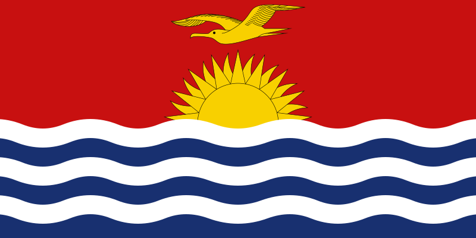

Uno de los veintisiete Estados soberanos que forman la Unión Europea.
 Alemania
Alemania
País soberano transcontinental que se extiende por Europa Occidental y por regiones y territorios de ultramar en América y los océanos Atlántico, Pacífico e Índico.
 Francia
Francia
País soberano transcontinental, constituido en una república parlamentaria compuesta por veinte regiones
 Italia
Italia
País de la península ibérica de Europa, incluye 17 regiones autónomas con diversas características geográficas y culturales.
 España
España
País montañoso de Europa Central, con varios lagos, aldeas y las altas cimas de los Alpes
 Suiza
Suiza
Corea es una región de Asia Oriental. En la historia moderna, hace referencia a Corea del Sur y a Corea del Norte.
 Corea
Corea
País del Sudeste Asiático. Es famoso por sus playas tropicales, los opulentos palacios reales, las ruinas antiguas y los templos adornados con figuras de Buda
 Tailandia
Tailandia
China es una nación muy poblada de Asia Oriental cuyos vastos paisajes abarcan praderas, desiertos, montañas, lagos, ríos
ChinaJapón es una nación insular del océano Pacífico con densas ciudades, palacios imperiales, parques nacionales montañosos y miles de santuarios y templos.
 Japón
Japón
Filipinas es un país del sur de Asia en el Pacífico Occidental, que abarca más de siete mil islas.
FilipinasKenia es un país de África Oriental con una costa en el océano Índico.
KeniaNigeria, oficialmente República Federal de Nigeria, es un país de África occidental
 Nigeria
Nigeria
Marruecos es un país de África del Norte que limita con el océano Atlántico y el mar Mediterráneo, y se distingue por las influencias culturales bereberes, árabes y europeas.
MarruecosEtiopia es un escabroso país sin litoral dividido por el Gran Valle del Rift.
EtiopiaMadagascar es una enorme nación insular frente a la costa sureste de África.
 Madagascar
Madagascar
Australia es un país rodeado por los océanos Índico y Pacífico.
 Australia
Australia
Nueva Zelanda es un país en el suroeste del océano Pacífico, que comprende dos islas principales, ambas marcadas por los volcanes y la glaciación.
 Nueva Zelanda
Nueva Zelanda
Fiyi, un país del Pacífico Sur, es un archipiélago de más de 300 islas.
 Fiyi
Fiyi
Samoa es un país que abarca el grupo más occidental del archipiélago de Samoa, en la Polinesia.
 Samoa
Samoa
Kiribati, una república insular del Pacífico Central, incluye 33 atolones de coral e islas que se extienden por el ecuador.
 KiribatiEstados Unidos es un país de 50 estados que ocupa una extensa franja de América del Norte.
 Estados Unidos
Estados Unidos
México es un país entre los Estados Unidos y América Central, conocido por las playas en el Pacífico y el golfo de México.
 Mexico
Mexico
Brasil es un vasto país de Sudamérica que se extiende desde la Cuenca del Amazonas en el norte hasta los viñedos y las enormes cataratas del Iguazú en el sur.
 Brasil
Brasil
Argentina es un país sudamericano de gran envergadura con un terreno que incluye las montañas de los Andes, lagos glaciales y praderas en las Pampas, la tierra tradicional de pastoreo de su famoso ganado.
 Argentina
Argentina
Colombia es un país del extremo norte de Sudamérica. Su paisaje cuenta con bosques tropicales, las montañas de los Andes y varias plantaciones de café.
Colombia| Europa | Asia | Africa | Oceania | America |
|---|---|---|---|---|
| Alemania | Corea | Kenia | Australia | Estados Unidos |
| Francia | Tailandia | Nigeria | Nueva Zelanda | Mexico |
| Italia | China | Marruecos | Fiyi | Brasil |
| España | Japon | Etiopia | Samoa | Argentina |
| Suiza | Filipinas | Madagascar | Kiribati | Colombia |